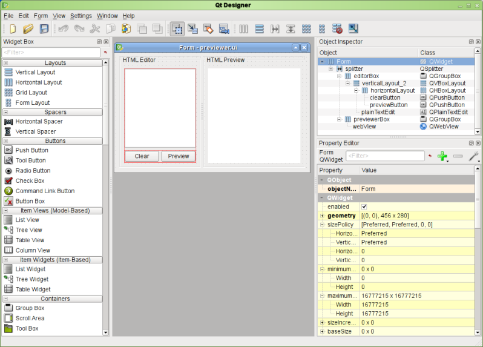

PyQT (1)

- 1995
- multiplateforme
- libre depuis QT4
- widgets graphiques, signaux/slots, macros, patterns, ...
QApplication
#!/usr/bin/python
# -*- coding: utf-8 -*-
import sys
from PyQt4 import QtGui
def run():
app = QtGui.QApplication(sys.argv)
w = QtGui.QWidget()
w.resize(250, 150)
w.setWindowTitle('MyApp')
w.show()
text = QtGui.QLabel('Hello World', w)
text.show()
sys.exit(app.exec_())
if __name__ == '__main__':
run()
slot/signal
from PyQt4.QtCore import QObject, pyqtSignal
class Foo(QObject):
mysignal = pyqtSignal()
def run(self):
self.mysignal.connect(self.myslot)
self.mysignal.emit()
def myslot(self):
print "signal received"
QtDesigner
Outil de modélisation de fenêtres
pyuic
Utilitaire de transformation de code .ui en code Python
# pyuic4 file.ui -o file_ui.py
Le code généré :
class Ui_MainWindow(object):
def setupUi(self, MainWindow):
MainWindow.setObjectName(_fromUtf8("MainWindow"))
MainWindow.resize(800, 600)
self.centralwidget = QtGui.QWidget(MainWindow)
self.centralwidget.setObjectName(_fromUtf8("centralwidget"))
self.verticalLayoutWidget = QtGui.QWidget(self.centralwidget)
self.verticalLayoutWidget.setGeometry(QtCore.QRect(9, 19, 781, 531))
self.verticalLayoutWidget.setObjectName(_fromUtf8("verticalLayoutWidget"))
self.verticalLayout = QtGui.QVBoxLayout(self.verticalLayoutWidget)
pyrcc
Utilitaire de transformation de code .qrc en code Python
# pyrcc4 resources.qrc -o resources.py
<RCC>
<qresource prefix="/plugins/MyPlugin" >
<file>icon.png</file>
</qresource>
</RCC>
EXERCICE 3